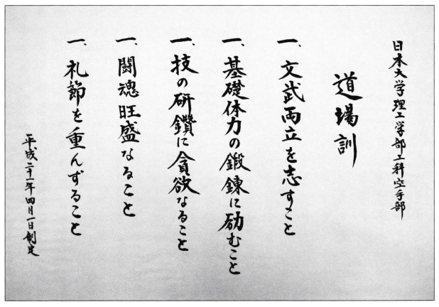

工科空手部について
| 創部周年 | 96周年目 |
|---|---|
| 流派 | 松濤館流 |
| 所属団体 | 全日本理工科系学生空手道連盟 |
| 会長 | 前田和志 |
| 監督 | 田岡範昭（2000年卒）（土木工学科） |
| 部長 | 小林義和教授 | 主将 | 大竹崚太 | コーチ | 坂本哲也、池田雄一、原靖典 | 活動場所 | 日本大学理工学部御茶ノ水キャンパス、船橋キャンパス |
道場訓
難しい精神訓ではなく、学生たる工科空手部員が、技を磨き、自らの心身を鍛える上で大切な基本となる 努力目標を、平素の心構えとして掲げた。部活動を通じて道場訓の本質が理解され、浸透していくことを望んでいる。
昭和37年度卒 益田 富士雄 作
昭和38年度卒 高橋 忠士 書